Noisy synchronization sets for noninvertible drives
Kresimir Josic and Evelyn Sander
We performed simulations for a drive-response system of the form
(x,y)->(f(x),g(x,y)), where f(x) is a tent map with slope c.
Figure 1: In this first set of simulations, the response is
quadratic: g(x,y) = dy+x^2. for a large range of d values (0.1 < d <
0.5), the noise added to the drive had less of an effect than the same
noise added to the response. The noise is additive Gaussian noise
with a variance of 0.003. Here c=1.9, d=0.1.
1a: In the absence of noise.
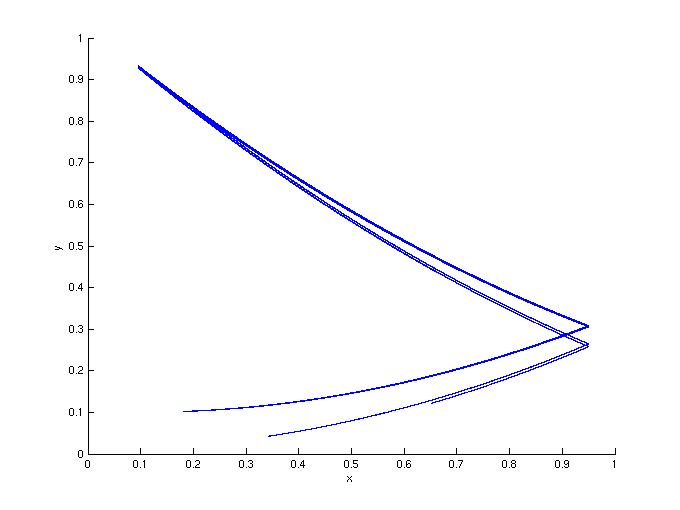
1b: Noisy drive.
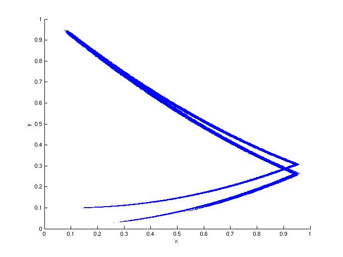
1c: Noisy response.
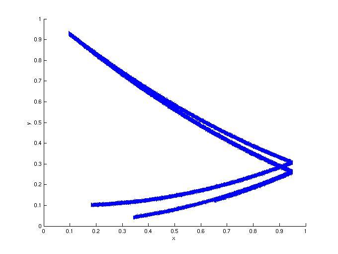
Figure 2: Same as Figure 1, but with d=0.5.
2a: In the absence of noise.
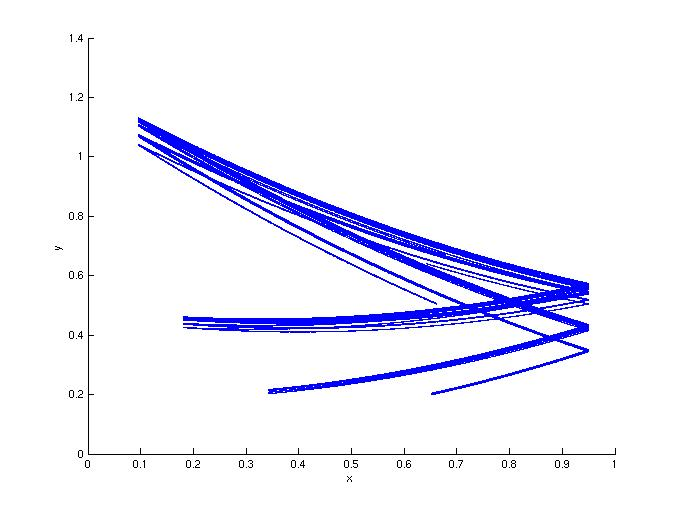
2b: Noisy drive.
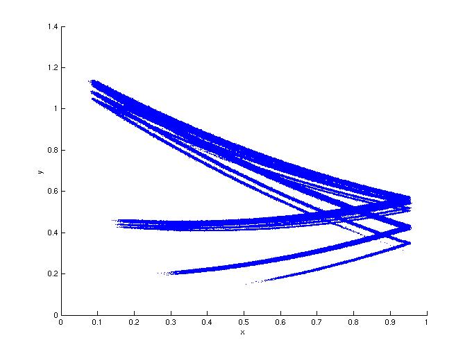
2c: Noisy response.
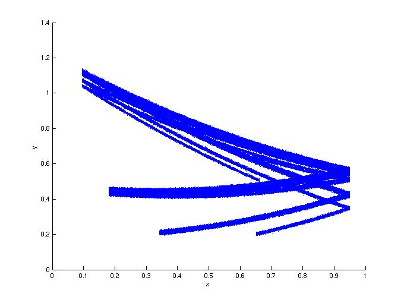
Figure 3: In this second set of simulations, the response is
sinusoidal: g(x,y) = ky+sin(2 pi x). For a large range of d values
(0.1 < k < 0.6), the noise added to the response had less of an effect
than the same noise added to the drive. The noise is additive
Gaussian noise with a variance of 0.01. Here c=1.9, k=0.25.
3a: In the absence of noise.
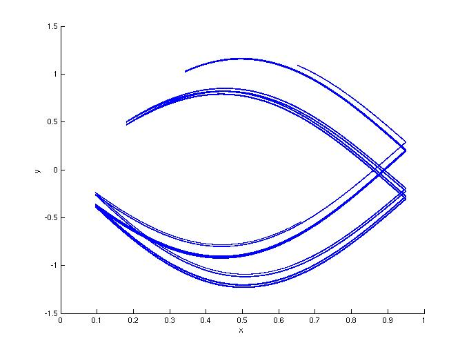
3b: Noisy drive.
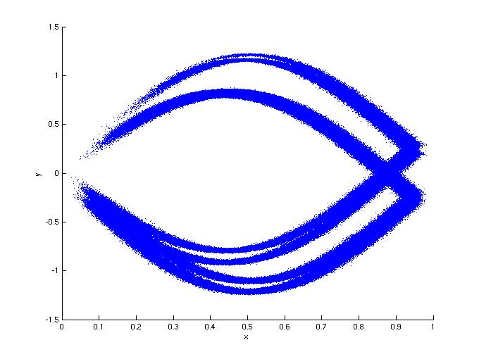
3c: Noisy response.
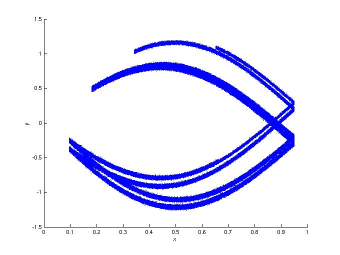
Figure 4: Same as Figure 3, but with d=0.5.
4a: In the absence of noise.
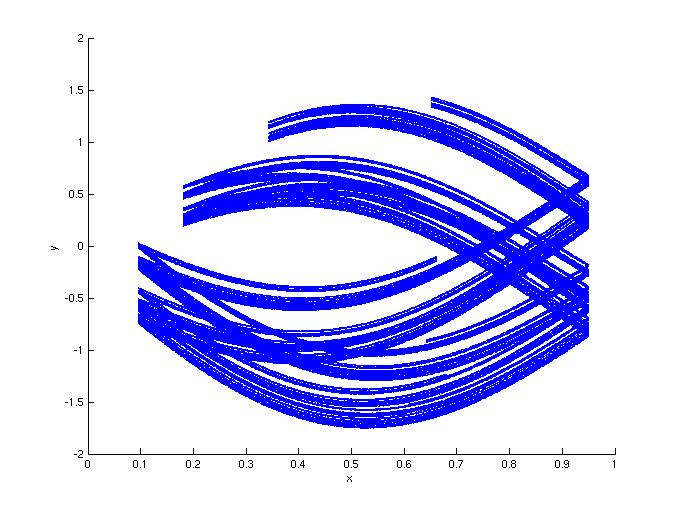
4b: Noisy drive.
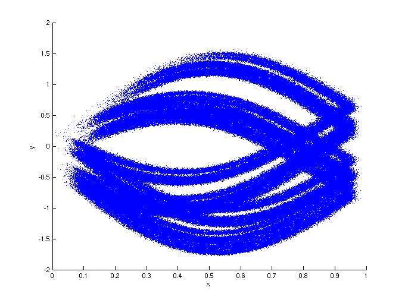
4c: Noisy response.
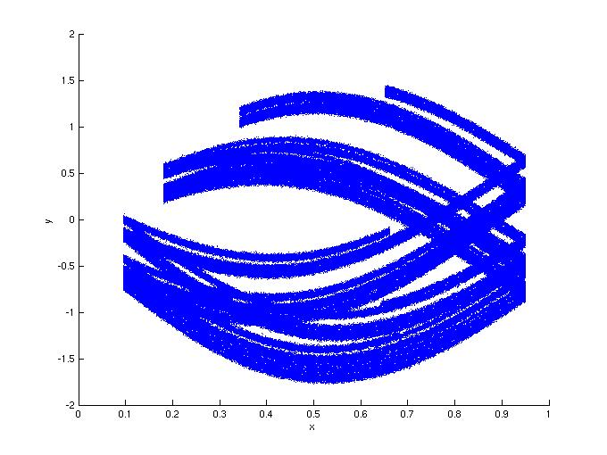